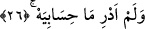
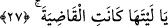

şiddetli olan rûhî bir elemi ifâde eder. Amel defterini sol taraftan alacak olan kişinin bu
temennîsi, aslında bir imkânsızı temennîdir.
26. Hesabımın ne olduğunu bilmeseydim!
Bu kişi uğrayacak olduğu kötü âkıbeti görünce “hesabımın ne olduğunu
bilmeseydim” der. Keşke bugün hesabım nedir bilmeseydim, zira ondan azap ve
mihnetten başka elde edeceğim bir şey yoktur.
Âyette yer alan “ma” istifham; yâni soru edâtıdır; ancak mevsûle olması da
mümkündür.
27. Keşke onunla (ölümümle) her iş olup bitseydi!
“Keşke o” işime ve hayatıma “kesin bir son verici olsaydı” da ben karşılaşmış
olduğum şeylerle karşılaşmasaydım.
“Keşke” şeklinde tercüme edilen “yâ leyte” ibâresi, temennînin tekrarı ve duyulan iç
yangısının yeniden ifâdesi mâhiyetindedir. Bir başka ifâdeyle; kitabını sol tarafından
alan kişi “keşke bu tatmış olduğum ölüm benim hayatıma ve işime son verseydi”
diyecektir. Her ne kadar “ölüm” kelimesi âyette zikrediliyor değil ise de söz gelimi
zikredilmiş hükmündedir. Böylece ölmeyi temennî eden kişi; “keşke tatmış olduğum bu
ölüm hayatıma son verseydi de bir daha dirilmeseydim” diyecektir. Bunu, kitabını görüp
incelediği zaman temennî edecek ve ölüm hâlinin devam etmiş olmasını dileyecektir.
Ayrıca hesaba çekilmek için yeniden diriltilmiş olmayı, orada karşılaşmış olduğu utanç
verici durumla ve kötü âkıbetle yüzyüze gelmemeyi temennî edecektir.
“Leytehâ” kelimesindeki zamirin “ölüm”e gitmesi mümkün olduğu gibi, kitabını sol
tarafından alan kişinin müşâhede edecek olduğu “hal”e gitmesi de mümkündür. Bu
anlamı dikkate alarak mânâ vermek gerekirse: “Keşke şu hâl, benim işimi bitiren hâl
olsaydı” der ve bu hâl ile karşılaşmaktan ise hayatını bitiren ölümü temennî eder. Çünkü
karşılaştığı o hâlde ölümden daha acı bir durum bulur ve ölümü tercih eder. Oysa
dünyada iken en hoşlanmadığı ölümdür. Nitekim bu anlamı şâir şu şekilde şiirleştirir:
Karşılaşma onunla -dilerim- ölümden beter!
İstersin ölmeyi, görünce onu, oysa ölüm en beter.